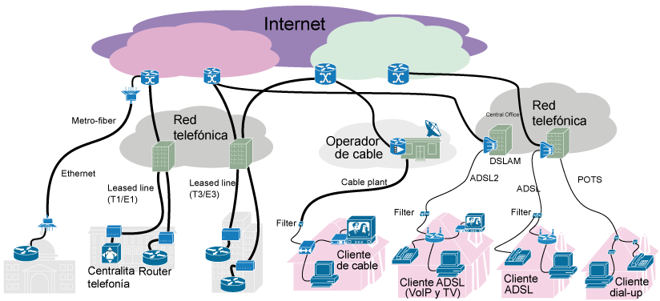
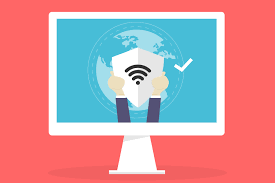

📜 Historia y evolución del Internet
El Internet nació en 1969 con ARPANET, usando conmutación de paquetes entre UCLA y Stanford...
📜 Historia y evolución del Internet
🌐 1. Orígenes (décadas de 1950-1960)
1957: En plena Guerra Fría, la Unión Soviética lanza el Sputnik, lo que impulsa a EE. UU. a crear tecnologías avanzadas. 1969: Nace ARPANET, una red desarrollada por la agencia ARPA del Departamento de Defensa de EE. UU., considerada la precursora del Internet. Conectó universidades como UCLA y Stanford para compartir información.💻 2. Década de 1970: Primeros protocolos
TCP/IP (1973-1983): Vinton Cerf y Robert Kahn desarrollan el protocolo TCP/IP, que permite la comunicación entre redes diferentes. Se convierte en el estándar en 1983. Aparecen otras redes como Usenet (foros de discusión) y BITNET.🧭 3. Década de 1980: Expansión académica
Universidades e instituciones adoptan ARPANET y redes similares. Se crean los primeros dominios (.edu, .gov, .com, etc.). En 1989, Tim Berners-Lee, un científico británico, propone un sistema de hipertexto: la World Wide Web (WWW).🕸️ 4. Década de 1990: Nace la Web
1991: Se lanza la World Wide Web al público. Es la parte visual del Internet que conocemos hoy. Se desarrollan navegadores como: Mosaic (1993) Netscape Navigator (1994) Internet Explorer (1995) Surgen los primeros motores de búsqueda, tiendas en línea, correos electrónicos masivos y chats.📈 5. Años 2000: Era de la información
Internet se masifica: más hogares y negocios se conectan. Nacen grandes plataformas: Google (1998) Wikipedia (2001) YouTube (2005) Facebook (2004) y otras redes sociales. Aparece el concepto de Web 2.0, centrado en la participación del usuario (blogs, foros, redes, etc.).📱 6. Años 2010: Internet móvil y redes sociales Explosión del acceso móvil con smartphones. Aplicaciones como Instagram, WhatsApp, TikTok revolucionan la comunicación. Internet se vuelve parte de la vida diaria (banca, trabajo remoto, entretenimiento). Auge del streaming, cloud computing y big data.
🤖 7. Actualidad y futuro (2020 en adelante)
Expansión del Internet de las Cosas (IoT): dispositivos conectados como relojes, electrodomésticos, autos. Crecimiento de la inteligencia artificial, realidad virtual y Web3 (blockchain, criptomonedas, descentralización). Debate sobre privacidad, censura, y regulación del contenido digital.🔧 Estructura y componentes

La red global se basa en routers, cables submarinos, centros de datos y protocolos...
🌐 Estructura de Internet (Resumen)
Infraestructura física: Cables de fibra óptica, satélites, centros de datos.
Proveedores de red: Tier 1: Espina dorsal (backbone) global. Tier 2 y 3: Proveedores regionales y locales. Red de acceso: Conexiones a hogares y empresas (WiFi, fibra, 4G/5G).
🧩 Componentes principales
Dispositivos: Computadoras, móviles, etc.
Routers y switches: Dirigen el tráfico de datos.
Servidores: Proveen servicios (web, correo, etc.).
Protocolos: TCP/IP, HTTP, DNS (regulan la comunicación).
Nombres de dominio/IP: Traducción de nombres a direcciones.
Aplicaciones: Navegadores, apps móviles.
Seguridad: Firewalls, cifrado, autenticación.
🌐 Servicios y aplicaciones

Correo, web, streaming, ecommerce, redes sociales y servicios en la nube...
🌐 Servicios de Internet
Web: Navegación de páginas.
Email: Envío y recepción de correos.
Mensajería y videollamadas: WhatsApp, Zoom.
Redes sociales: Facebook, Instagram.
Streaming: YouTube, Netflix.
Compras en línea: Amazon, Mercado Libre.
Almacenamiento en la nube: Google Drive.
Educación virtual: Moodle, Coursera.
Banca y pagos: Apps bancarias, PayPal.
📱 Aplicaciones
Navegadores: Chrome, Firefox.
Apps de mensajería: WhatsApp, Telegram.
Redes sociales: TikTok, X.
Plataformas educativas: Google Classroom.
Apps bancarias: BBVA, Mercado Pago.
🔒 Seguridad en Internet
El cifrado, firewalls, autenticación multifactor y modelos de seguridad “zero trust”...
🔒 Seguridad en Internet
✅ Principales medidas
Contraseñas seguras
Usa combinaciones fuertes y únicas.
Antivirus y firewalls
Protegen contra virus y accesos no autorizados.
Actualizaciones
Mantén tus sistemas y apps al día.
Autenticación en dos pasos (2FA)
Añade una capa extra de seguridad.
Navegación segura (HTTPS)
Asegura que la información viaja cifrada.
Copia de seguridad (backup)
Para evitar pérdida de datos por ataques.
⚠️ Principales amenazas
Phishing: Correos o mensajes falsos para robar datos.
Malware: Programas maliciosos que infectan tu dispositivo.
Spyware: Software espía que roba información personal.
Ransomware: Bloquea tus archivos hasta que pagues.
Robo de identidad: Suplantación de personas en línea.
🚀 Nuevas tecnologías emergentes